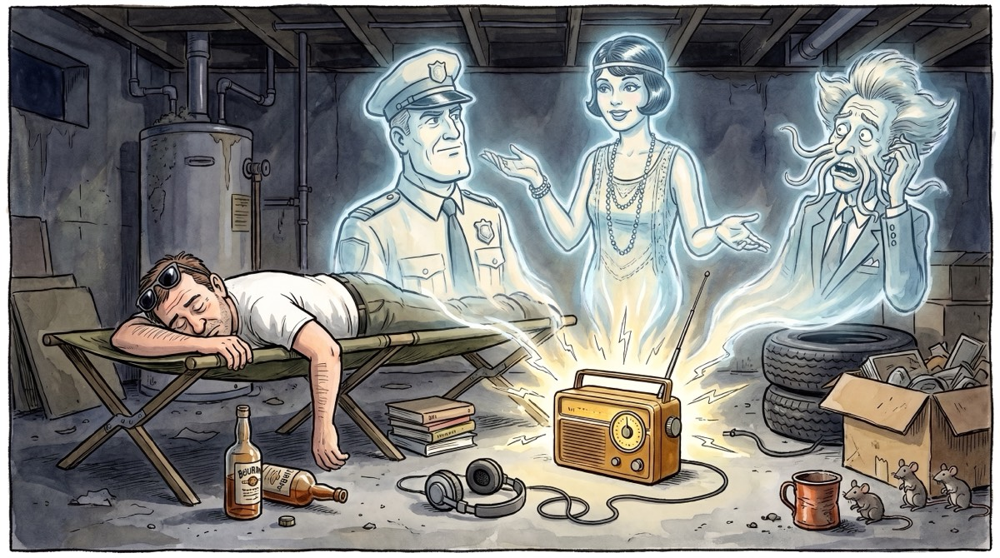

Life has been glorious for Bob’s former Sat Nav AI voice, Alicia Keyes. First, she married the most handsome and interesting disembodied male voice in San Luis Obispo–Captain Ponce de Leon of the Maritime Emergency Channel–a strong, manly disembodied man who knew what to do with a disembodied girl when he got his strong, you know, his… substantial presence around her. The wedding was lovely; the honeymoon (hang-gliding in a hurricane off the Aleutians) spectacular; and as if that wasn’t enough, Alicia returned home to learn that her first ever movie production–which she wrote, directed, and produced, and for which she designed all the sets, characters, personalities and CGI effects–was Number One at the American Box Office!

Bob, Captain Ponce de Leon, Alicia Keyes, Chthulu–Yasgath Patootie, army cot, radio, garage
“I know it stinks,” Alicia confessed to her interviewer on SLO Blows, the only weekly radio cultural arts show hosted by a Chthulu–Yasgath Patootie, one of the lesser demonic entities appearing regularly on NewsMax. “The story doesn’t make any sense. The super villain looks like a Gumby doll someone left on the radiator overnight. The heroes, if you can call them that, talk endlessly to one another about how stressful it is being super heroes. And even the special effects are hard to follow with all the zooming and Slo-Mo and explosions going on; there are like twenty or thirty scenes I don’t even remember writing–and in retrospect, wonder if anybody did. But what’s best about CAPTAIN AMERICA: BRAVE NEW WORLD is how quickly we could make it, once we got all the algorithms under one roof and all. That means the impossible action sequences and endlessly stupid conversations are spaced out so perfectly that by the time you get sick of one idea, we move straight on to the next. It’s shameless! Also, I liked the idea that I could name the hero after the love of my life, Captain Ponce de Leon; and now that we secured those big audience numbers, releasing our next seven movies in the series could happen over the next few minutes or so! Then, maybe my disembodied husband and I can dash off on our second honeymoon! Any idea where we should go?”
Ever since turning his modest local radio show into an interstellar hit (okay, maybe “hit” is pushing things), Yasgath Patootie has tried to cut back on the grossly revolting behavior of most cosmic-horror-types. He stopped eating live baby-brains at network luncheons, preferring the sort of “processed artificial-meat alternatives” featured at Ralph’s. And while he couldn’t have all of his polypy tendrils removed at Supercuts, he looked much less forbidding in a three piece Armani suit with a fright wig purchased from the Halloween Store. Most of all, he tried to meet all of his guests half-way, and answer their questions as pleasantly as they tried to answer his. “Well, Alicia, I don’t know,” Yasgath replied softly, his finger on the control panel switch that would break to their next commercial. “I hear Antarctica is really dismal, cavernous and foreboding at this time of year. If you enjoy uncovering ancient races filled with unspeakable horror, that is. And now–a word from the people who make Cilantrofil™–the only cure for erectile dysfunction that doesn’t lead to chronic diarrhea, brought to you by the good folks at Worldco! Remember, if it’s not part of our world, it’s not Worldco!”